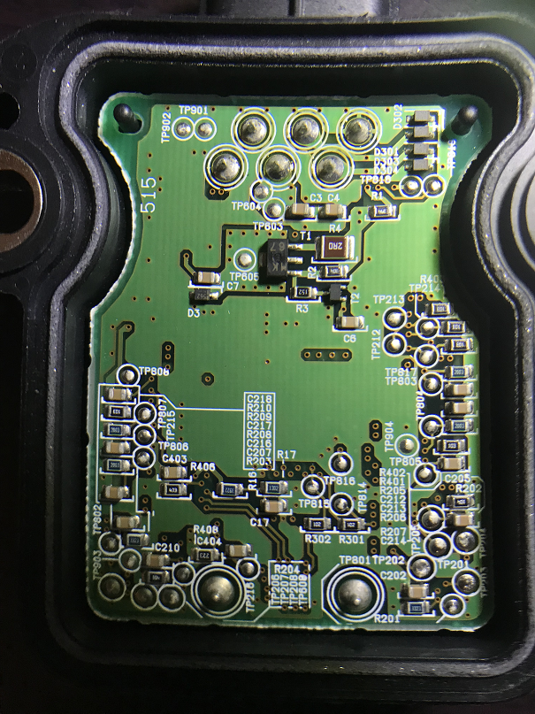

これまでシミュレーション環境でカーセキュリティの勉強をしていて、その成果は妄想CAN三部作ということで以下の記事にまとめている。
そこで実際に車で使われているECUを入手、基板を解析してCANポートのピンアサインを特定し、現実のCAN通信の雰囲気を知ることにした。
リアルECUの魅力
リアルECUはいいぞ。
- 本物の車載通信を体感できる
- 診断リクエストに答えてくれる(OBD2, KWP2000, UDS…)
- 車と違って場所をとらない（負け惜しみ）
何よりモチベがあがる。
リアルECUのよくないところ
完全にブラックボックスなのでピンアサインからリバーシングする必要がある。
これはある意味面白いが失敗したりわからなかったら絶望。
そして一番大きいのが
- 召喚コストがかかる
これに尽きる。
現実世界にECUを召喚するということは、ECUからの通信を物理的に受け取る必要がある。
ECUとCAN通信するために必要なものは記事後半に記載する。
ヨーレートセンサーの解析
解析対象

というわけでヨーレートセンサーを手に入れた。ヤフオクでコネクタつきで送料込み1800円くらいだった。
- メーカー: デンソー
- 型番: 89183-12040
- 使用車種: トヨタ レクサス LS460
- 端子: 6pin (ピンの接続はブレッドボード用ジャンプワイヤメスが使用可能)
- コネクタ: 90980-12303
住友電装025型TS防水シリーズ6極[横一列]Fコネクタ (6P025WPK-TS-1083-F)
なぜヨーレートセンサーなのかは記事後半をどうぞ。
ピンアサインの推測

ヨーレートセンサーを手に入れたのはいいものの、6pinのうちどのピンがIG(イグニッション電源)・GND・CAN-H・CAN-Lなのかは頑張って推測するしかない。
基板でわかることが多いので、何とかして基板を見てみる。
本体の表側は硬いプラスチックに覆われており、開けることは不可能な模様（熱や薬品で溶かしたり硬い刃物で切れば行ける気もするが）。
裏側はプレートがはめ込まれているようで、これはマイナスドライバーでこじ開けることができた。

テスタで導通チェックをしたところ、上の大きいポイント6個が端子の6pinの位置と対応していることがわかった。
便宜上、右からpin1～pin6とする。
このうちpin5、pin6は付属したコネクタにて埋められていることからNCであることがわかる。
この時点で、残りの4pinがIG・GND・CAN-H・CAN-Lのいずれかであることが確定する。
pin1は基板のグランドへ抜けていることと、テスタで基板の各所に開けられている小さい穴と導通していることを確認したのでGNDとわかる。
pin4については、青枠で囲った部分に接続されているように見える。
パターンを追うと最初にコンデンサに接続されており、（多層基板なので完全には追えないが）周囲に3端子レギュレータなど電源回路があることからこの時点でIGでは？と察する。
pin2, 3は、オレンジ枠で囲った部分に接続されているように見える。
パターンを追うと2つともダイオードに接続されている。
信号系回路は逆流防止のためにダイオードを挟むので、pin2とpin3はCAN-H、CAN-Lではないかと推測する。
ここまでくればECUに電源を入れることは可能になる。
ということでpin1とpin4を安定化電源に接続する。（これで火噴いたら推測は間違ってたということで。。）
ECUに電源を入れる

電源を入れた。発火する様子はない。
当然ながらLEDなどはないので、これだけでは正常に電源が入ったか判断することはできない。
ただ、正しく電源が入っているなら、CANポートであるpin2、 pin3にはCAN通信が出ているはず。
pin2、pin3からCAN通信が出ているのか、そしてそれぞれがCAN-HなのかCAN-Lなのかを調べるにはオシロスコープで波形を見るのが一番いい。
が、そんな高価なものは持っていないのでアナログテスターで電圧を測る。
pin2を測ると2V付近を指した。CANはドミナントの電圧が2.5Vなので電源がちゃんと入っていることがわかる。ただあまり動きは見られない・・・。
次にpin3を測ると2V付近を指した。じっと待ってると高い電圧のほうにプルプル針が動くことが見えた。CAN-Hっぽい。
以上の情報から、ピンアサインが大体わかった。
| pin1 | pin2 | pin3 | pin4 | pin5 | pin6 |
|---|---|---|---|---|---|
| GND | CAN-L | CAN-H | IG | NC | NC |
CANデバイスにECUを接続

受信側のCANデバイスで終端抵抗を入れるようにして、candumpしてみる。
動画でどうぞ。

いけた！！
本体を振り回すとそれに合わせてデータが変わることも確認。
面白い。
ECUの入手と選び方
今後、私のようにカーセキュリティの勉強をしたい人のために、リアルECUを解析するために必要なことを記載する。
ECUとCAN通信するために必要なもの
CANデバイス
ピンキリで、どこにでも売っているわけではない。
安くて評判がいいのは30ドル程度で売られている CANable というUSB to CAN アダプタだが、海外輸入が必要。
一応国内Amazonでも中華アダプタは売られていて、ひみつ氏による使えたレビューがある商品もある。
自分の場合はAmazonで1個あたり250円で販売されている MCP2515 モジュールを改造して Raspberry Pi Zero にSPIで接続している。
が素人にはオススメできない。。。(理由を知りたい方はこのツイートのリプライ参照）
ECUとCANデバイスを接続するための線・コネクタ
どのECUにも他のパーツと接続するためのハーネスがあり、そしてコネクタが存在する。
上はトヨタ車のヨーレートセンサーのピン。幸運にもブレッドボード用のジャンプワイヤを接続可能。
下はスバル車のエアバッグECUのピン。ピンが平たくジャンプワイヤでは接続できず、コネクタが必要になる。
コネクタはメーカごとに様々なタイプが有るため、慣れないうちはECUに合ったコネクタを用意するよりも最初からコネクタがついているECUを落札したほうがいい。
これが一番手に入りにくい。
ゼロからハードウェアの勉強をし始めて3ヶ月が経ったが、疑問が無限に湧いてくる。
ECUの選定
実は車のECUはヤフオクで大量に流通している。
パーツを選べばそれこそ500円程度(送料別)でECUが手に入るのだ。
ただ一口にECUといっても、車にはECUの筆頭であるエンジンECUやボディ系ECUのパワーウインドウECU、ドアECUなど数え切れないくらいの種類がある。

Design Wave Magazine No.104 “「クルマ」という名の組み込みシステムPart3” P.21
この中から安くて良さそうなECUを選ぶわけだが、最初は単機能なものを選ぶべきだと思う。
自分はディーラーや車検工場でもなく一般市民なので整備マニュアルは持ってないし、ピンアサインが公開されているわけでもないので、有象無象のピンから雰囲気で電源とCAN-H、CAN-Lを推測する必要があるためだ。
当然ながら複雑なことをするECUほどピンの数が多く、単機能なほど少ないので、ピンを推測する労力を減らすためにぜひ単機能なものを使っていきたい。
ということでその線で色々探してみたが、車の知識に乏しいこともあり一人ではうまく見つけられなかった。。
が、私が勝手に師匠と崇めているjptomoya氏から、ヨーレートセンサーがオススメですよというアドバイスを貰えた。
ヨーレートセンサーの入手

ベンツに搭載されているボッシュのヨーレートセンサー (0 265 005 230)。
ただしコイツはCANに対応していなかった。。
ヨーレートセンサーは横滑り検知のための回転角速度センサーであり、ECUとして以下の特徴を持つ。
- 安い
- 多く流通している
- 診断プロトコルに対応
- 信号がたくさん出る
- ECU本体を動かせば角速度が変わるので信号データが瞬時に変わる
というわけでヨーレートセンサーをヤフオクで入手した。
検索・購入時に気にしたところは以下。
- 配送先が個人宅に対応しているかどうか
→カーショップが使う運輸業者の制約により、個人宅への配送に対応していない場合がある。 - できればコネクタ付きのものを選ぶ
→コネクタを用意するのは面倒なので。
さらにコネクタによってはNC(未使用)ピンが埋められている場合があるので、のちにピンアサインを推測するときに該当ピンがNCであるとわかるというメリットもある。 - 送料
→ECUは落札・即決価格が安くても送料が高い物が多い。 - 「コンピュータ」というキーワードでも検索してみる
→クルマ業界ではECUではなくコンピュータというワードがよく使われている模様。
出品されているECUの型番で調べてもデータシートが存在することは滅多に無いため、そのECUがCAN対応か調査するのは現実的ではない。
しかし大抵のECUは、商品名や説明文にどのクルマから取り出したか書いてある場合が多い。
そのため、取り出し元のクルマがCANに対応しているか調べることで間接的にCAN対応かどうか判断できる。
どのクルマがCANに対応しているか調べるには、国産車なら以下のページにある ELM327動作確認車両のPDFファイルを確認する。
OBD Info-san! 動作確認済み車両および接続プロトコル
接続プロトコルに「TOYOTA CAN」や「ISO CAN」(ISO 15765)と記載されているものなら恐らくCANに対応している。 「Auto Negotiate」はCANかK-LINEであると思うが、最近のモデルであればCANだと思う。(各メーカごとのK-LINEシェアが下がっている年代から推測すること)
※同じ車種でも製造年代によって対応していないものもあるので注意
※ここらへんは勘なのでもっといいやり方あったら誰か教えて下さい
まとめ
召喚に成功した。
はじめてのECU解析にはヨーレートセンサーがよい。
このECUを使って色々試していきたい。